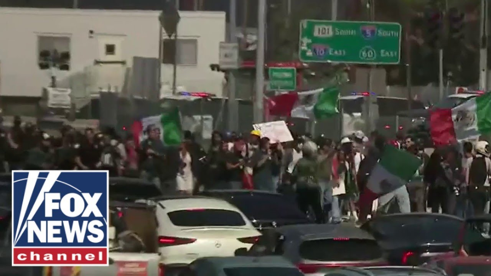

【突发：暴徒封锁加州高速公路】
Summary: Fox's senior correspondent Steve Herrian reports live on escalating protests in Los Angeles, where rioters have blocked a major highway, clashed with police and National Guard, and engaged in looting and violence.
摘要： 福克斯高级记者史蒂夫·赫里安现场报道了洛杉矶不断升级的抗议活动，暴徒封锁了主要高速公路，与警察和国民警卫队发生冲突，并参与抢劫和暴力事件。

⏱️ Estimated Reading Time: 8 min
📚 六级生词 📚 雅思生词 📚 托福生词 📚 专八生词 📚 SAT生词 📚 考研生词 📚 GRE生词 📚 高考生词 📚 视频里的生词
Fox's senior correspondent Steve Herrian is on the ground.
福克斯高级记者史蒂夫·赫里安正在现场。
Steve, this is getting serious here.
史蒂夫，情况正在变得严重。
Laura, this is a battle really that keeps moving.
劳拉，这确实是一场不断移动的战斗。
Before it was in front of the detention center and now it's moved to the highway.
之前是在拘留中心前，现在转移到了高速公路上。
That's the 101 there.
那里是101号公路。
As you mentioned, it's really a key artery for downtown LA to get to other arteries.
正如你所提到的，这是洛杉矶市中心通往其他主干道的关键动脉。
We've seen those protesters move down and block off the southbound route.
我们看到抗议者南下并封锁了南行路线。
Police have been hurried there.
警察已经匆忙赶到那里。
You see the Mexican flag there being waved and they are being pushed aside.
你可以看到墨西哥国旗在那里挥舞，他们被推到一边。
They tried to block the northbound as well, but they failed.
他们还试图封锁北行路线，但失败了。
It just goes to show the police really have to defend this entire highway.
这恰恰说明警察必须保卫整条高速公路。
This is not the first time it happened.
这不是第一次发生。
It happened Sunday at a different spot, but 400 p.m. rush hour LA traffic.
周日发生在另一个地点，但现在是洛杉矶下午4点的交通高峰时段。
You got to figure there's a lot of angry people in those vehicles down there.
你可以想象那些车里有很多愤怒的人。
And this has not been a quiet day.
今天并不平静。
We're hearing a lot about nonviolent protests.
我们听到很多关于非暴力抗议的说法。
Well, if you stand here, you hear explosions.
但如果你站在这里，你会听到爆炸声。
We've heard three of them in the past several hours.
过去几个小时里我们听到了三次。
Fireworks being fired at National Guard.
有人向国民警卫队发射烟花。
Water, you hear another one right there.
水，你刚刚又听到一声。
Water bottles being thrown at National Guard and flashbangs used in retaliation by the National Guard.
有人向国民警卫队扔水瓶，国民警卫队则用闪光弹还击。
There's also looting.
还有人抢劫。
We wondered when or if it was going to start.
我们之前还在想抢劫何时或是否会开始。
Well, it certainly has started overnight Monday.
现在可以肯定的是，周一晚上就开始了。
A lot of looting.
大量抢劫。
The Apple store looted.
苹果商店被抢。
A sneaker store, a legal marijuana distributor, a jewelry store.
一家运动鞋店、一家合法大麻分销商、一家珠宝店。
His business he said was absolutely ruined.
他说他的生意完全毁了。
an immigrant himself as they try and clear this highway.
他自己也是一名移民，而他们正试图清理这条高速公路。
Now, we have seen three large LAPD buses come in and it looks like they're uh there for prisoners.
现在，我们看到三辆洛杉矶警察局的大巴驶入，看起来是用来关押囚犯的。
They have cages on them.
车上有笼子。
They were empty when we saw them come in.
我们看到它们进来时是空的。
So, we're looking at arrests about to go up here.
所以，我们预计逮捕人数即将上升。
There's been about 160 over the weekend.
周末已有约160人被捕。
That could be a lot more soon as briefly now for about 20 minutes, the these demonstrators have managed to bl block off once again a key artery in Los Angeles.
这一数字可能很快就会大幅增加，因为现在短短20分钟内，这些示威者再次成功封锁了洛杉矶的一条关键动脉。
Laura, back to you.
劳拉，交还给你。
All right, Steve.
好的，史蒂夫。
Um, this is insane, Steve.
呃，这太疯狂了，史蒂夫。
When you watch this play out, like we've heard people on some of the other networks go on and on about how this was, you know, look, nothing's happening here.
当你看到这一切发生时，就像我们听到其他一些媒体的人反复说，看，这里什么都没发生。
There was literally someone on another network who was a reporter standing in front of the National Guard saying, "Look, nothing's happening. This is peaceful."
另一家媒体的一名记者站在国民警卫队面前说：“看，什么都没发生。这是和平的。”
But you're there.
但你在现场。
You're witnessing what's going on.
你亲眼目睹了发生的一切。
Uh and then in, you know, 5 or 10 minutes later, you start hearing explosions, you start uh seeing the police and the uh National Guard try to move the protesters back because they had to actually move vehicles out of the federal ICE facility there.
然后，你知道，5到10分钟后，你开始听到爆炸声，开始看到警察和国民警卫队试图驱散抗议者，因为他们必须把车辆从联邦ICE设施那里移走。
vehicles that they need to keep order.
这些车辆是他们维持秩序所需的。
Uh so Steve, the description of the peaceful protest, that's completely out the window.
所以史蒂夫，关于和平抗议的描述完全站不住脚了。
It's just not accurate.
这根本不准确。
And if you stood here for a few hours, you'd see it's not accurate.
如果你在这里站几个小时，你就会发现这不准确。
You'd see water bottles or pieces of concrete fly in the air.
你会看到水瓶或混凝土块在空中飞舞。
And keep in mind, you know, you can say non-lethal force or it's only fireworks.
请记住，你可以说这是非致命武力或只是烟花。
When you hear these things explode and you're a police officer or a National Guard soldier, you don't know what it is.
当你听到这些东西爆炸时，如果你是警察或国民警卫队士兵，你不知道那是什么。
You just know that someone is throwing something either on fire or exploding in your direction.
你只知道有人朝你扔燃烧或爆炸的东西。
And that has happened three times in the past two hours here this afternoon.
今天下午过去两小时里已经发生了三次。
Steve, there was concern earlier today that there weren't a lot of arrests happening that you you saw in in real time authorities were seeing individuals throwing projectiles at the officers yet no arrests.
史蒂夫，今天早些时候有人担心逮捕人数不多，你实时看到当局看到有人向警察投掷抛射物，却没有逮捕。
And that was surprising to the people on the ground narrating this.
这让现场报道的人感到惊讶。
no arrests and yet obvious violence.
没有逮捕，却有明显的暴力。
And I if if that continues to be tolerated, what's the message to people who want to just bandwagon and join in on the so-called fun here?
如果这种情况继续被容忍，对那些只想跟风加入这场所谓“乐趣”的人传递了什么信息？
And some of these people just do think this is a a form of recreation.
其中一些人真的认为这是一种娱乐形式。
It is stunning to see some of the extreme video that we have seen when you saw that one man who they've identified.
看到我们看到的那些极端视频令人震惊，比如那个被他们确认身份的男子。
Now, as we can begin to taste a little tear gas in the air, that one man who they've identified throwing rock after rock at passing uh officers vehicles one after another.
现在，当我们能闻到空气中有一点催泪瓦斯的味道时，那个被确认身份的男子正一块接一块地向经过的警车扔石头。
And how he's able to do that and how he's not stopped is just, you know, as an American, it's stunning to watch how you can get away with throwing rocks through the windows of traveling police cars.
他怎么能这样做而没有被阻止，作为一个美国人，看到有人向行驶中的警车窗户扔石头却逍遥法外，真是令人震惊。
All right, Steve, thank you very much.
好的，史蒂夫，非常感谢。
Hey, Sean Hannity here.
嘿，我是肖恩·汉尼提。
Hey, click here to subscribe to Fox News YouTube page and catch our hottest interviews and most compelling analysis.
嘿，点击这里订阅福克斯新闻YouTube频道，获取我们最热门的采访和最引人入胜的分析。
You will not get it anywhere else.
你在其他地方看不到这些内容。